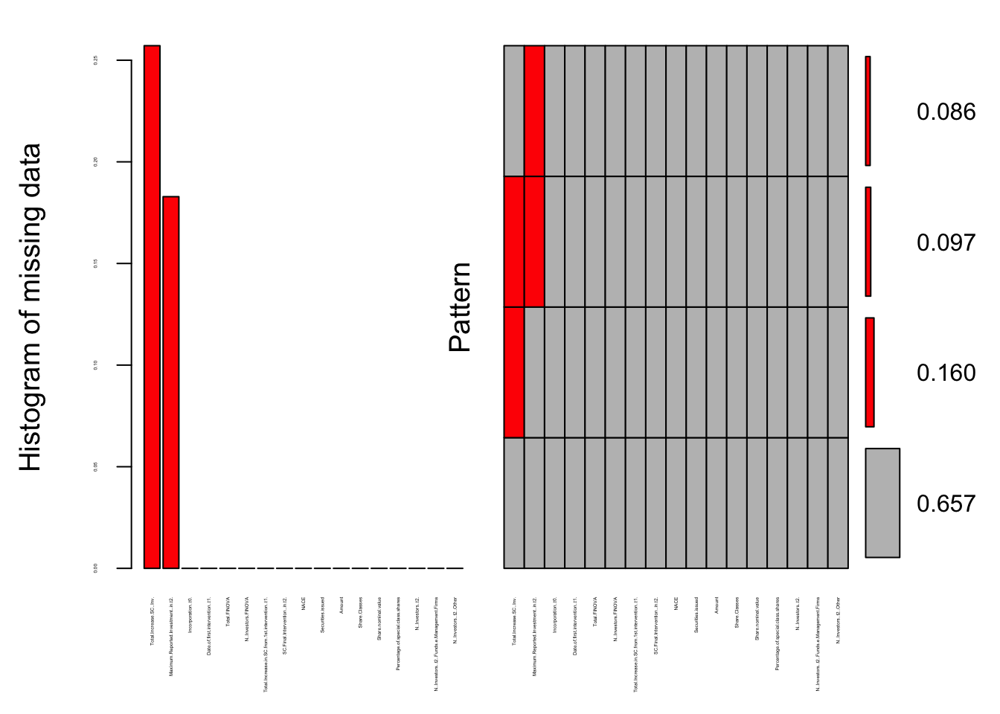
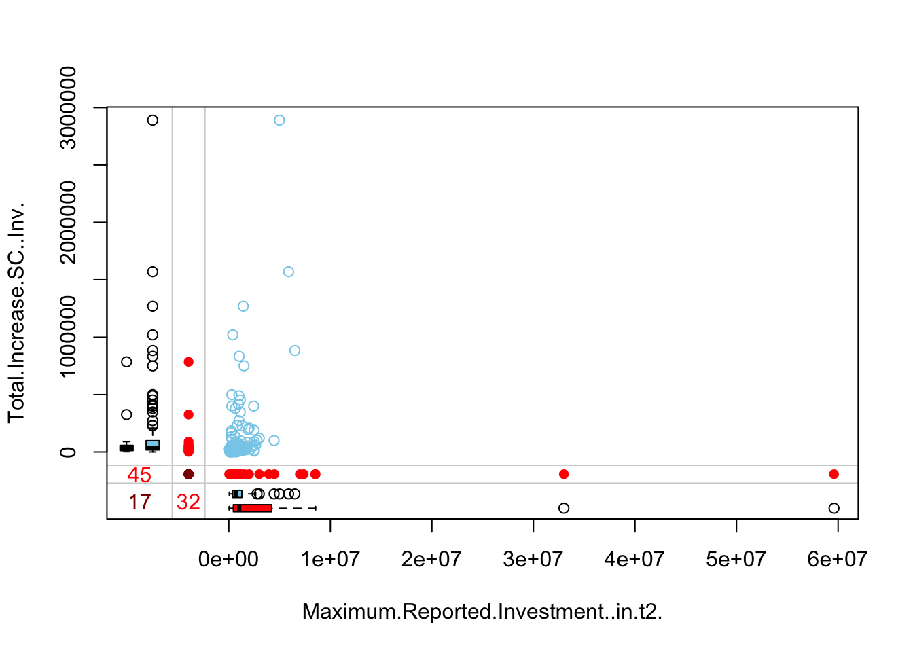
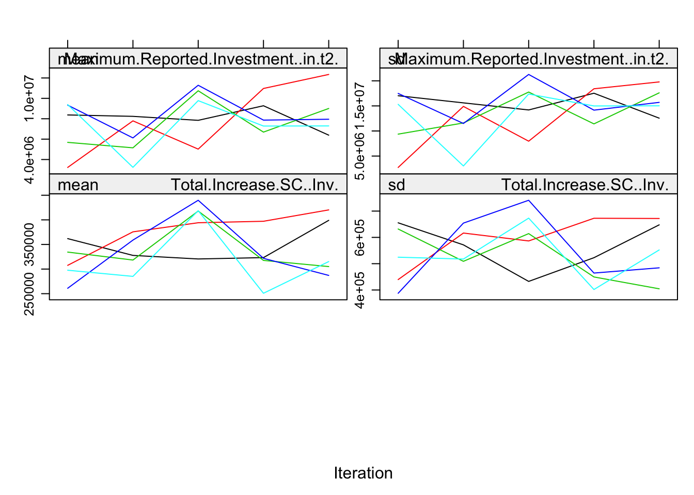
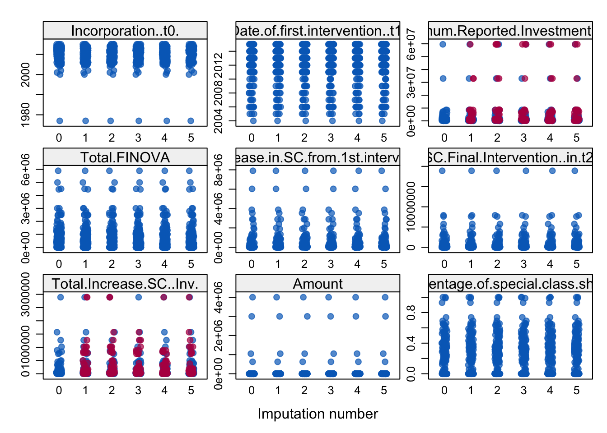
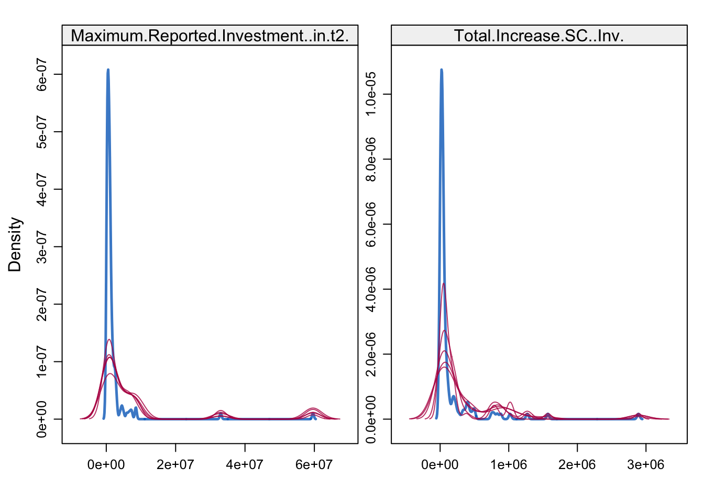

Chapter8 Data sources and Treatment
8.1 Venture Capital (CMVM data)
Tables Annual Reports, Market and Securities Commission (CMVM) Source: www.cmvm.pt (direct link) Corrections (sums, rounding, etc.) Data collection/retrieved: 07/15 and 08/16 (2015) Data collected and processed in CSV:
http://d-vf.github.io/cmvm-relatorio-de-capital-de-risco-2007
http://d-vf.github.io/cmvm-relatorio-de-capital-de-risco-2008
http://d-vf.github.io/cmvm-relatorio-de-capital-de-risco-2009
http://d-vf.github.io/cmvm-relatorio-de-capital-de-risco-2010
http://d-vf.github.io/cmvm-relatorio-de-capital-de-risco-2011
http://d-vf.github.io/cmvm-relatorio-de-capital-de-risco-2012
http://d-vf.github.io/cmvm-relatorio-de-capital-de-risco-2013
http://d-vf.github.io/cmvm-relatorio-de-capital-de-risco-2014
http://d-vf.github.io/cmvm-relatorio-de-capital-de-risco-2015
8.2 Companies financed through FINOVA
(Fundo de Apoio ao Financiamento à Inovação, Sistema de Apoio ao Financiamento e Partilha de Risco).
O FINOVA – Fundo de Apoio ao Financiamento à Inovação – was established by Decree-Law no. 175/2008, of August 26, as a privileged instrument for the achievement of the objectives established in SAFPRI (Sistema de Apoio ao Financiamento e Partilha de Risco). This program, created under the Quadro de Referência Estratégico Nacional (QREN), whose financing entities are the Programa Operacional Factores de Competitividade (COMPETE) and the Programas Operacionais Regionais de Lisboa e Algarve, aims to promote the dissemination of financing instruments that provide better Financing conditions for Portuguese SMEs.
Info: http://www.pmeinvestimentos.pt/fundos-sob-gestao/finova/apresentacao/
Data collected and processed in CSV::
https://d-vf.github.io/finova/ (consolidated version “Fusão FINOVA por fases”)
8.3 MJ - Ministry of Justice
(Ministério da Justiça - Portal da Publicações)
Last update: 29/09/2016
Article 167.º of the Commercial Registry Code, ( epigraph “Publicações obrigatórias”), provides that they are compulsory publications, on a public access website regulated by an ordinance of the Minister of Justice, thus referring to Decree-Law no. 129/98 , of 13 May, with subsequent amendments, in which Article 6 (Collective Persons) provides for the following acts and facts relating to legal persons to be registered in the FCPC: a) Incorporation; b) Change the name or designation; c) Change of object or share capital; d) Change of the location of the registered office or postal address, including the transfer of the registered office to and from Portugal; e) The change of the economic activity code (CAE/NACE); f) Merger, spin-off or transformation; g) cessation of activity; h) Dissolution, liquidation or termination of the return to activity.
In addition, the issuance of bonds (in particular in subheading l) of paragraph 1 of article 3.º of the Commercial Registry Code) or warrants (in particular in item z) of paragraph 1 of article 3.º Commercial Registry Code), when carried out by particular offer.
Records relating to the appointment and termination of functions were not taken into account; the deposit of annual accounts and the change of the company’s headquarters, where they constitute a significant number of decisions published, but with little relevance to the analysis of the structure of capital of companies.
It were extracted from the records relating to 175 companies referenced as an object of investment (own site of venture capital companies; PME Investimento e Crunchbase), for a total of 1179 events were analyzed.
After analysis, 754 relevant occurrences were validated (for example, the same fact described “update” can either have a mere correction of a name, or as an amendment to the articles of incorporation, with only the last one being validated). From these validated records, the relevant and systematically reported elements were extracted into classes, namely:
Share capital; Increase, number of shares (or quotas), nominal value, object, Economic activity (CAE) (in which they were extracted through the fiscal number “NIF”), type of fact reported; Date (assuming that of the publication as it appears in the register in the Ministry of Justice, modality and form of subscription, categories if they exist, the number of ordinary shares and the other classes referred thereto, if referenced, were recorded. Bonds;
Issuance of other securities;
In the nominal value column, in the case of “Sociedade por Quotas”, the value of each quota (share) was assumed;
The parameter “mode was not reduced,” that is preferred to leave all information as it is, so that it can subsequently be worked (or synthesized).
Data (clean ans structured ) in csv
https://d-vf.github.io/raw-companies-house-records/
Link ( https://drive.google.com/open?id=0B7zs3-L1xKbiSmNMX1FwS1VjSmc) to original documents Link (pdf): 1214 docs (pdf); 554,7 MB on disk).
-> (search - use search tool da GDrive - por NIF + DOC ID), ex “00000100 DOC 1”
Consolidated version direct link: https://d-vf.github.io/raw-data-fusion-en/
8.4 Crunchbase and Webpages
The following were extracted:
Webpages - information on the various websites of funds and management firms about entities subject to investment;
Crunchbase - Financing Rounds reported on Crunchbase (of funds based in portugal).
Link to data processed in csv:
8.5 Annual Reports (financial statements)
Were extracted, data relating to related parties, subsidiaries, investments in venture capital, taken from the annual reports of various entities that have interests in VC (or in companies subject to investment).
Preferred to the latest available accounts (2015), in which only when it was nonexistent details of the subsidiaries referred to, if appealed to older documents (eg Investment Fund).
In the case of entities with accounts closing at a different date (not 31 December 2015), those of March 2016 were considered (case of SICAR, Luxembourg).
Description, Entity (information issuer) and Source are referenced in each document:
https://d-vf.github.io/raw-relatorios-de-contas-act-nov-2016/
8.6 European Venture Capital Association (EVCA)
Version used (2007-2015 series) is available in .xls
Direct Link: https://www.investeurope.eu/research/activity-data/annual-activity-statistics/
See notes in the “Other” section, namely the differences between CMVM and EVCA reporting
8.7 Instituto Nacional de Estatística (INE)
A. - Principais Indicadores Económicos e Patrimoniais das Empresas Não Financeiras em Portugal, 2004-2012 - PRINCIPAIS INDICADORES ECONÓMICOS E PATRIMONIAIS DAS EMPRESAS EM PORTUGAL, 2004-2012 B. - INDICADORES PATRIMONIAIS DAS EMPRESAS NÃO FINANCEIRAS EM PORTUGAL, 2010-2014 -Principais Indicadores Económicos e Patrimoniais das Empresas Não Financeiras em Portugal, 2004-2012
Source: 1. Period: 2010-2014 Direct Link: https://www.ine.pt/xportal/xmain?xpid=INE&xpgid=ine_publicacoes&PUBLICACOESpub_boui=255945257&PUBLICACOESmodo=2 Last update: 19/10/2016 Livro 1: INDICADORES PATRIMONIAIS DAS EMPRESAS NÃO FINANCEIRAS EM PORTUGAL, 2010-2014 Livro 2: INDICADORES DEMOGRÁFICOS DAS EMPRESAS NÃO FINANCEIRAS EM PORTUGAL, 2010-2014
- Period: 2004-2012 Direct Link: https://www.ine.pt/xportal/xmainxpid=INE&xpgid=ine_publicacoes&PUBLICACOESpub_boui=210758098&PUBLICACOESmodo=2&xlang=pt Latest update:: 19/10/2016
breakdown: By size (SME, Large) By NACE (Total, C, J, M)
Notes: there is a break in the series, in which for the years 2010-2012 were assumed the data of the most recent full version (2010-2014). See notes in the “Other” section.
3.Inquéritos Qualitativos de Conjuntura”
Periodo: 2000(Jan)-2015 (Dez) Indicador de clima económico (% - mm3m) Apreciação sobre a actividade dos últimos 3 meses(saldos de respostas extremas) dos serviços Apreciação sobre a procura global dos últimos 3 meses(saldos de respostas extremas) da indústria transformadora
8.8 Capital Markets
Source: Euronext Index: PSI20 Period: 02/01/2007 - 31/12/2015 Link: https://www.euronext.com/en/products/indices/PTING0200002-XLIS
Index Comparison Index: PSI20, FTSE, S&P 500 Period: 11/09/2009 (max) - 31/12/2015 Google Finance (only from 2010) : Link: https://finance.google.com/finance?q=INDEXEURO:PSI20&ei=80UnWIDHEsvwUK75gZgK
8.9 Data Fusion
Companies (MJ Merger (& Companies House), Crunchbase, Accounts Reports, WebPages, Finova (see above)
After treatment and data structuring individually (by source), a table was constructed that consolidates all the collected information, in a structured way, with the following parameters:
| Name | Description | Source |
|---|---|---|
| Entidade | Commercial Entity Name | Used as it is on the “ Página das Publicações” |
| NIF | Tax Identification Number, more stable identifier that the name | Used as it is on the “ Página das Publicações” |
| Constituição (t0) | Date of Incorporation (publication) | MJ. |
| Data primeira intervervenção (t1) | Date of first intervention (by investors) | All sources |
| Total Máximo Reportado em Investimento (em t2) | Total maximum reported (in the case of conflict between sources, assumed the highest value reported) | Crunchbase/PME Investimentos//Relatório Execução COMPETE/ Annual Reports |
| Total FINOVA | Total Amount (all Funds) that invested in the entity | PME Investimentos/Report Execução COMPETE |
| Nº Investidores FINOVA | Total funds that invested in the entity | PME Investimentos/Report Execução COMPETE |
| Total Aumento de CS desde 1ª intervenção (t1) | Total increase in share capital from 1st Intervention | MJ |
| CS Final Intervenção (em t2) | Share capital at the end of the intervention (not knowing, the last until 09/2016) | MJ |
| Total Aumento CS (Inv) | Total increase of share capital minus entries from previous partners (Individual Persons) | MJ |
| CAE | Code of Economic Activity | NIF + http://www.sicae.pt/ |
| Empresa não sediada em PT | If there affiliate or controlling relationship, indication of the country / Foreign registration | |
| Exit | Divestment, Exit of the Funds of the entity | WebPages, Annual Reports, Crunchbase |
| Emissão de Valores Mobiliários | Issuance of Securities | MJ |
| Montante | Amount | MJ |
| Data Emissão | Issuance date | MJ |
| Categorias de Acções | Existence of share classes | MJ |
| Percentage de Acções Especiais | Percentage of Special Shares | MJ |
| Valor nominal Acções | Share nominal value | MJ |
| Nº Investidores (t2) | Number of total investors | All sources, per VC Funds, Not knowing the Fund was imputed to the Management entity |
| Nº Investidores (t2) FCR´s e SCR´s | Total number of investors who are investment firms or VC Funds registered with the CMVM | All sources, per VC Funds, Not knowing the Fund was imputed to the Management entity |
| Nº Investidores (t2) Outros | Total number of investors who are investment firms or VC Funds and NOT registered with the CMVM | All sources |
| Investidores 1 - 1 | Column by Investor |
FCR´s - Webpages, CMVM, FINOVA (inc. Compete) e Relatórios de Contas (used for the HHI, heatmap and sankey diagram)
Link: (https://d-vf.github.io/raw-data-fusion/) - raw version, NA´S)
8.10 Network graph
Network graph
- Edges and nodes (csv);
- Gephi (version)
- JSON version (exported from gephi);
- Gfex version (exported from gephi);
8.11 Resolution of conflicts between sources
There are several methods for resolving conflicts from heterogeneous data sources, where deleting records, would compromising the sample. Namelely: Clustering and similarity; majority rule; relevance of sources (or weighting and ranking, etc.)
Considering the structure and reliability of the different sources:
MJ and PME Investimento are official sources and are more relevant than the others; Financial Accounts report are audited accounting documents and official; Finally, Crunchbase depends on (usually) investors completing the data and, like CB Insights, using press releases or other signals that depend, both parties wanting to promote or not the financing round. On the other hand, it has many data without variables (amount of funding).
Thus:
First cases were solved that only had 1 investor and were verified the dates of investments (or rounds).
It is considered that if there is more than one investor, the round of the others, will be of equal value.
For cases not financed by FINOVA, the percentage reported in the financial statements and the acquisition (or nominal) value and transactions between related parties were also used.
Only for the cases that there is no support value, we used MCMC, using the remaining validated sample.
## NIF Incorporation..t0. Date.of.first.intervention..t1.
## Min. : 5186805 Min. :1977 Min. :2004
## 1st Qu.:508350977 1st Qu.:2009 1st Qu.:2011
## Median :509941766 Median :2011 Median :2013
## Mean :495561427 Mean :2010 Mean :2012
## 3rd Qu.:510680122 3rd Qu.:2013 3rd Qu.:2014
## Max. :513603980 Max. :2015 Max. :2015
##
## Maximum.Reported.Investment..in.t2. Total.FINOVA N..Investors.FINOVA
## Min. : 35000 Min. : 0 Min. :0.00
## 1st Qu.: 400000 1st Qu.: 0 1st Qu.:0.00
## Median : 825500 Median : 351500 Median :1.00
## Mean : 2258845 Mean : 674628 Mean :0.95
## 3rd Qu.: 1507500 3rd Qu.:1000000 3rd Qu.:1.00
## Max. :59600000 Max. :5890000 Max. :5.00
## NA's :32
## Total.Increase.in.SC.from.1st.intervention..t1.
## Min. : 0
## 1st Qu.: 40400
## Median : 71700
## Mean : 356206
## 3rd Qu.: 207000
## Max. :7900000
## NA's :3
## SC.Final.Intervention..in.t2. Total.Increase.SC..Inv.
## Min. : 14 Min. : 0
## 1st Qu.: 61300 1st Qu.: 16350
## Median : 97600 Median : 33550
## Mean : 610643 Mean : 146557
## 3rd Qu.: 417000 3rd Qu.: 89900
## Max. :18900000 Max. :2890000
## NA's :3 NA's :50
## NACE
## J - Information and communication :84
## M - Professional, scientific and technical activities :49
## C - Manufacturing :22
## G - Wholesale and retail trade, repair of motor vehicles and motorcycles: 9
## N - Administrative and support service activities : 5
## K - Financial and insurance activities : 4
## (Other) : 7
## Company.not.based.in.PT
## :173
## D ORBIT S.R.L., Italy : 1
## DE & MA USA : 1
## DE, USA : 2
## PRINCIPLE POWER, INC., NV USA 2007: 1
## UNBABEL, INC.2013, DELAWARE (USA) : 1
## VENIAM, INC., 7/20/2012, DE USA : 1
## Exit
## :164
## 2013, share swap to UK LLC : 1
## 2013,DE, USA : 1
## 2015, EDP, Novabase : 1
## Date of Involuntary Revocation, 06-30-2014: 1
## Dissolution, 20/09/2016 : 1
## (Other) : 11
## Securities.issued Amount Issuance.date
## Alternext : 1 Min. : 0 0 :175
## Bonds : 3 1st Qu.: 0 02/07/2015: 1
## no records :175 Median : 0 18/09/2015: 1
## Securities issuing: 1 Mean : 48209 2013 : 1
## 3rd Qu.: 0 2014 : 1
## Max. :4000000 22/04/2016: 1
##
## Share.Classes N..Special.Share.Classes Share.nominal.value
## N :51 Min. : 0 1.00E-02 :81
## N - LLC :26 1st Qu.: 0 1.00E+00 :37
## UK LLC : 2 Median : 52500 N - LLC :26
## US C-corp: 3 Mean : 2294213 5.00E+00 :15
## Y :98 3rd Qu.: 2565000 1.00E-01 : 8
## Max. :53900000 US C-corp: 3
## NA's :1 (Other) :10
## Number.of.shares Percentage.of.special.class.shares N..Investors..t2.
## Min. :0.000e+00 Min. :0.0000 Min. : 1.000
## 1st Qu.:6.220e+04 1st Qu.:0.0000 1st Qu.: 1.000
## Median :2.450e+06 Median :0.0894 Median : 2.000
## Mean :2.139e+07 Mean :0.1972 Mean : 2.344
## 3rd Qu.:8.445e+06 3rd Qu.:0.3475 3rd Qu.: 3.000
## Max. :1.890e+09 Max. :1.0000 Max. :21.000
##
## N..Investors..t2..Funds.e.Management.Firms N..Investors..t2..Other
## Min. :0.000 Min. : 0.000
## 1st Qu.:1.000 1st Qu.: 0.000
## Median :1.000 Median : 1.000
## Mean :1.306 Mean : 1.039
## 3rd Qu.:1.000 3rd Qu.: 1.000
## Max. :5.000 Max. :20.000
##
## Investors.1
## Portugal Ventures : 12
## FCR Novabase Capital Inovacao e Internacionalizacao: 9
## FCR Portugal Ventures Internacionalizacao : 9
## FCR Capital Criativo I : 7
## ESV inovacao & internacionalizacao : 6
## Fast Change : 6
## (Other) :131
## Investors.2
## :76
## Busy Angels : 7
## PNV Capital : 5
## FCR ISTART I : 3
## FCR PV Industrias Criativas: 3
## Fundo ISQ Capital : 3
## (Other) :83
## Investors.3
## :129
## Busy Angels : 2
## Alex Chesterman : 1
## Atomico : 1
## BETA SOCIEDADE DE CAPITAL DE RISCO, S.A. : 1
## Beyond Newsgen Solucoes de Gestao e Personalizacao de Conteudos Lda: 1
## (Other) : 45
## Investors.4 Investors.5
## :146 :161
## BGI SA : 2 Alex Chesterman : 1
## FCR Empreender mais : 2 Amino Capital : 1
## A. Silva Matos II - Investimentos, SA: 1 Critical SGPS (holding): 1
## Adeyemi Ajao : 1 Daninves, SGPS, S.A. : 1
## B31 Investimentos, Lda : 1 Docentes FCUL : 1
## (Other) : 27 (Other) : 14
## Investors.6
## :171
## Biocant Associacao : 1
## CGC Centro de Genetica Clinica e Patologia, S.A.: 1
## Cisco Investments : 1
## David Peterson : 1
## FCR Global2 : 1
## (Other) : 4
## Investors.7 Investors.8
## :174 :176
## Digital Garage : 1 EDP Ventures SGPS : 1
## FAI Energias : 1 Elad Gil : 1
## FCR Revitalizar Centro : 1 Orange Digital Ventures : 1
## Join Capital : 1 Undisclosure Angel Investment: 1
## Liberty Global Ventures: 1
## Rob McClatchey : 1
## Investors.9 Investors.10
## :178 :178
## FundersClub : 1 Caixa Capital: 1
## Yamaha Motor Ventures: 1 Kevin Rose : 1
##
##
##
##
## Investors.11 Investors.12
## :179 :179
## Klaus von Sayn-Wittgenstein: 1 Matrix Partners: 1
##
##
##
##
##
## Investors.13 Investors.14 Investors.15
## :179 :179 :179
## Raymond Tonsing: 1 Rob Emrich: 1 Roger Dickey: 1
##
##
##
##
##
## Investors.16 Investors.17 Investors.18 Investors.19
## :179 :179 :179 :179
## Ryan Petersen: 1 Wefunder: 1 Young Guo: 1 Workday Ventures: 1
##
##
##
##
##
## Investors.20 Investors.21
## :179 :179
## Investo: 1 Y Combinator: 1
##
##
##
##
## There are 3 types of variables: count data (or discrete), continuous and factors There are missing values in 3 categories: Maximum.Reported.Investment..in.t2.: NA’s :32 Total.Increase.in.SC.from.1st.intervention..t1.: NA’s :3 SC.Final.Intervention..in.t2..NA’s :50
UK LLC, US C-corp (data$Categorias.de.Acções) for removing all non PT
xpto <- subset(xpto, Share.Classes!="UK LLC", Share.Classes!="US C-corp")
xpto1 <-subset(xpto, Share.Classes!="UK LLC")
xpto2 <-subset(xpto1, Share.Classes!="US C-corp")Dropping/exclusing collumns (by getting only needed collumns) Dropping Name, NIF, Number of stock, Number of Special Stock and Investor´s names (from 44 variables to 17, same nº of observations)
xpto3 <- `xpto2`[c(2:10,13,14, 16, 18, 20:23)]Summary of new data frame (“xpto3”)
summary(xpto3)## Incorporation..t0. Date.of.first.intervention..t1.
## Min. :1977 Min. :2004
## 1st Qu.:2008 1st Qu.:2011
## Median :2011 Median :2013
## Mean :2010 Mean :2012
## 3rd Qu.:2013 3rd Qu.:2014
## Max. :2015 Max. :2015
##
## Maximum.Reported.Investment..in.t2. Total.FINOVA N..Investors.FINOVA
## Min. : 35000 Min. : 0 Min. :0.0000
## 1st Qu.: 395500 1st Qu.: 0 1st Qu.:0.0000
## Median : 800000 Median : 363000 Median :1.0000
## Mean : 1914224 Mean : 693903 Mean :0.9771
## 3rd Qu.: 1465000 3rd Qu.:1000000 3rd Qu.:1.0000
## Max. :59600000 Max. :5890000 Max. :5.0000
## NA's :32
## Total.Increase.in.SC.from.1st.intervention..t1.
## Min. : 0
## 1st Qu.: 41700
## Median : 74400
## Mean : 360263
## 3rd Qu.: 207500
## Max. :7900000
##
## SC.Final.Intervention..in.t2. Total.Increase.SC..Inv.
## Min. : 100 Min. : 0
## 1st Qu.: 62500 1st Qu.: 16350
## Median : 99000 Median : 33550
## Mean : 617608 Mean : 146557
## 3rd Qu.: 422000 3rd Qu.: 89900
## Max. :18900000 Max. :2890000
## NA's :45
## NACE
## J - Information and communication :82
## M - Professional, scientific and technical activities :49
## C - Manufacturing :22
## G - Wholesale and retail trade, repair of motor vehicles and motorcycles: 9
## N - Administrative and support service activities : 5
## K - Financial and insurance activities : 4
## (Other) : 4
## Securities.issued Amount Share.Classes
## Alternext : 1 Min. : 0 N :51
## Bonds : 3 1st Qu.: 0 N - LLC :26
## no records :170 Median : 0 UK LLC : 0
## Securities issuing: 1 Mean : 49586 US C-corp: 0
## 3rd Qu.: 0 Y :98
## Max. :4000000
##
## Share.nominal.value Percentage.of.special.class.shares N..Investors..t2.
## 1.00E-02:81 Min. :0.0000 Min. :1.00
## 1.00E+00:37 1st Qu.:0.0000 1st Qu.:1.00
## N - LLC :26 Median :0.1420 Median :2.00
## 5.00E+00:15 Mean :0.2029 Mean :2.12
## 1.00E-01: 8 3rd Qu.:0.3495 3rd Qu.:3.00
## 0.00E+00: 2 Max. :1.0000 Max. :8.00
## (Other) : 6
## N..Investors..t2..Funds.e.Management.Firms N..Investors..t2..Other
## Min. :0.000 Min. :0.0000
## 1st Qu.:1.000 1st Qu.:0.0000
## Median :1.000 Median :0.0000
## Mean :1.309 Mean :0.8114
## 3rd Qu.:1.000 3rd Qu.:1.0000
## Max. :5.000 Max. :7.0000
## There are 2 types of variables: count data (or discrete), continuous and factors There are missing values in 2 categories: Maximum.Reported.Investment..in.t2.: NA’s :32
Total.Increase.SC..Inv..NA’s :45
Give proper types to predictors
xpto3$Incorporation..t0.<- as.integer(xpto3$Incorporation..t0.) #integer
xpto3$Date.of.first.intervention..t1. <- as.integer(xpto3$Date.of.first.intervention..t1.) #integer
xpto3$Maximum.Reported.Investment..in.t2. <- as.numeric(xpto3$Maximum.Reported.Investment..in.t2.) # continuous variable
xpto3$Total.FINOVA <- as.numeric(xpto3$Total.FINOVA) # continuous variable
xpto3$N..Investors.FINOVA <- as.ordered(xpto3$N..Investors.FINOVA) # discrete variable /count data
xpto3$Total.Increase.in.SC.from.1st.intervention..t1. <- as.numeric(xpto3$Total.Increase.in.SC.from.1st.intervention..t1.) # continuous variable
xpto3$SC.Final.Intervention..in.t2. <- as.numeric(xpto3$SC.Final.Intervention..in.t2.) # continuous variable
xpto3$Total.Increase.SC..Inv.<- as.numeric(xpto3$Total.Increase.SC..Inv.) # continuous variable
xpto3$NACE <- as.factor(xpto3$NACE)
xpto3$Securities.issued <- as.factor(xpto3$Securities.issued)
xpto3$Amount <- as.numeric(xpto3$Amount) # continuous variable
xpto3$Share.Classes <-as.factor(xpto3$Share.Classes)
xpto3$Share.nominal.value <- as.factor(xpto3$Share.nominal.value)
xpto3$Percentage.of.special.class.shares <- as.numeric(xpto3$Percentage.of.special.class.shares) #as numeric
xpto3$N..Investors..t2. <- as.ordered(xpto3$N..Investors..t2.)
xpto3$N..Investors..t2..Funds.e.Management.Firms <- as.ordered(xpto3$N..Investors..t2..Funds.e.Management.Firms)
xpto3$N..Investors..t2..Other <- as.ordered(xpto3$N..Investors..t2..Other)Return classes of a data frame
sapply(xpto3, class)## $Incorporation..t0.
## [1] "integer"
##
## $Date.of.first.intervention..t1.
## [1] "integer"
##
## $Maximum.Reported.Investment..in.t2.
## [1] "numeric"
##
## $Total.FINOVA
## [1] "numeric"
##
## $N..Investors.FINOVA
## [1] "ordered" "factor"
##
## $Total.Increase.in.SC.from.1st.intervention..t1.
## [1] "numeric"
##
## $SC.Final.Intervention..in.t2.
## [1] "numeric"
##
## $Total.Increase.SC..Inv.
## [1] "numeric"
##
## $NACE
## [1] "factor"
##
## $Securities.issued
## [1] "factor"
##
## $Amount
## [1] "numeric"
##
## $Share.Classes
## [1] "factor"
##
## $Share.nominal.value
## [1] "factor"
##
## $Percentage.of.special.class.shares
## [1] "numeric"
##
## $N..Investors..t2.
## [1] "ordered" "factor"
##
## $N..Investors..t2..Funds.e.Management.Firms
## [1] "ordered" "factor"
##
## $N..Investors..t2..Other
## [1] "ordered" "factor"8.11.1 Missing values w/ mice package (multivariable imputation w/ chained equations)
(remember mids, mira and mipo are S4 type (to get final have to combine/lists) library(VIM) #viz missing patterns
library(mice)
library(VIM)## Loading required package: colorspace## Loading required package: grid## Loading required package: data.table##
## Attaching package: 'data.table'## The following objects are masked from 'package:xts':
##
## first, last## VIM is ready to use.
## Since version 4.0.0 the GUI is in its own package VIMGUI.
##
## Please use the package to use the new (and old) GUI.## Suggestions and bug-reports can be submitted at: https://github.com/alexkowa/VIM/issues##
## Attaching package: 'VIM'## The following object is masked from 'package:datasets':
##
## sleepmd.pattern(xpto3)## Incorporation..t0. Date.of.first.intervention..t1. Total.FINOVA
## 115 1 1 1
## 15 1 1 1
## 28 1 1 1
## 17 1 1 1
## 0 0 0
## N..Investors.FINOVA Total.Increase.in.SC.from.1st.intervention..t1.
## 115 1 1
## 15 1 1
## 28 1 1
## 17 1 1
## 0 0
## SC.Final.Intervention..in.t2. NACE Securities.issued Amount
## 115 1 1 1 1
## 15 1 1 1 1
## 28 1 1 1 1
## 17 1 1 1 1
## 0 0 0 0
## Share.Classes Share.nominal.value Percentage.of.special.class.shares
## 115 1 1 1
## 15 1 1 1
## 28 1 1 1
## 17 1 1 1
## 0 0 0
## N..Investors..t2. N..Investors..t2..Funds.e.Management.Firms
## 115 1 1
## 15 1 1
## 28 1 1
## 17 1 1
## 0 0
## N..Investors..t2..Other Maximum.Reported.Investment..in.t2.
## 115 1 1
## 15 1 0
## 28 1 1
## 17 1 0
## 0 32
## Total.Increase.SC..Inv.
## 115 1 0
## 15 1 1
## 28 0 1
## 17 0 2
## 45 77aggr_plot <- aggr(xpto3, col=c('grey','red'), numbers=TRUE, sortVars=TRUE, labels=names(xpto3), cex.axis=.2, gap=1, ylab=c("Histogram of missing data","Pattern"))
##
## Variables sorted by number of missings:
## Variable Count
## Total.Increase.SC..Inv. 0.2571429
## Maximum.Reported.Investment..in.t2. 0.1828571
## Incorporation..t0. 0.0000000
## Date.of.first.intervention..t1. 0.0000000
## Total.FINOVA 0.0000000
## N..Investors.FINOVA 0.0000000
## Total.Increase.in.SC.from.1st.intervention..t1. 0.0000000
## SC.Final.Intervention..in.t2. 0.0000000
## NACE 0.0000000
## Securities.issued 0.0000000
## Amount 0.0000000
## Share.Classes 0.0000000
## Share.nominal.value 0.0000000
## Percentage.of.special.class.shares 0.0000000
## N..Investors..t2. 0.0000000
## N..Investors..t2..Funds.e.Management.Firms 0.0000000
## N..Investors..t2..Other 0.0000000Other viz (getting total Maximum reported + SC Inv)
marginplot(xpto3[c(3,8)])
8.12 Imputing the missing data using rf & cart
require(rpart)## Loading required package: rpartrequire(lattice)## Loading required package: lattice##
## Attaching package: 'lattice'## The following object is masked from 'package:evd':
##
## qqMethod classification and regression trees
imp <- mice(xpto3, meth = "cart", minbucket = 10) ##
## iter imp variable
## 1 1 Maximum.Reported.Investment..in.t2. Total.Increase.SC..Inv.
## 1 2 Maximum.Reported.Investment..in.t2. Total.Increase.SC..Inv.
## 1 3 Maximum.Reported.Investment..in.t2. Total.Increase.SC..Inv.
## 1 4 Maximum.Reported.Investment..in.t2. Total.Increase.SC..Inv.
## 1 5 Maximum.Reported.Investment..in.t2. Total.Increase.SC..Inv.
## 2 1 Maximum.Reported.Investment..in.t2. Total.Increase.SC..Inv.
## 2 2 Maximum.Reported.Investment..in.t2. Total.Increase.SC..Inv.
## 2 3 Maximum.Reported.Investment..in.t2. Total.Increase.SC..Inv.
## 2 4 Maximum.Reported.Investment..in.t2. Total.Increase.SC..Inv.
## 2 5 Maximum.Reported.Investment..in.t2. Total.Increase.SC..Inv.
## 3 1 Maximum.Reported.Investment..in.t2. Total.Increase.SC..Inv.
## 3 2 Maximum.Reported.Investment..in.t2. Total.Increase.SC..Inv.
## 3 3 Maximum.Reported.Investment..in.t2. Total.Increase.SC..Inv.
## 3 4 Maximum.Reported.Investment..in.t2. Total.Increase.SC..Inv.
## 3 5 Maximum.Reported.Investment..in.t2. Total.Increase.SC..Inv.
## 4 1 Maximum.Reported.Investment..in.t2. Total.Increase.SC..Inv.
## 4 2 Maximum.Reported.Investment..in.t2. Total.Increase.SC..Inv.
## 4 3 Maximum.Reported.Investment..in.t2. Total.Increase.SC..Inv.
## 4 4 Maximum.Reported.Investment..in.t2. Total.Increase.SC..Inv.
## 4 5 Maximum.Reported.Investment..in.t2. Total.Increase.SC..Inv.
## 5 1 Maximum.Reported.Investment..in.t2. Total.Increase.SC..Inv.
## 5 2 Maximum.Reported.Investment..in.t2. Total.Increase.SC..Inv.
## 5 3 Maximum.Reported.Investment..in.t2. Total.Increase.SC..Inv.
## 5 4 Maximum.Reported.Investment..in.t2. Total.Increase.SC..Inv.
## 5 5 Maximum.Reported.Investment..in.t2. Total.Increase.SC..Inv.Method random forest (not used)
imp2 <- mice(xpto3, meth = "rf", ntree = 30) ##
## iter imp variable
## 1 1 Maximum.Reported.Investment..in.t2. Total.Increase.SC..Inv.
## 1 2 Maximum.Reported.Investment..in.t2. Total.Increase.SC..Inv.
## 1 3 Maximum.Reported.Investment..in.t2. Total.Increase.SC..Inv.
## 1 4 Maximum.Reported.Investment..in.t2. Total.Increase.SC..Inv.
## 1 5 Maximum.Reported.Investment..in.t2. Total.Increase.SC..Inv.
## 2 1 Maximum.Reported.Investment..in.t2. Total.Increase.SC..Inv.
## 2 2 Maximum.Reported.Investment..in.t2. Total.Increase.SC..Inv.
## 2 3 Maximum.Reported.Investment..in.t2. Total.Increase.SC..Inv.
## 2 4 Maximum.Reported.Investment..in.t2. Total.Increase.SC..Inv.
## 2 5 Maximum.Reported.Investment..in.t2. Total.Increase.SC..Inv.
## 3 1 Maximum.Reported.Investment..in.t2. Total.Increase.SC..Inv.
## 3 2 Maximum.Reported.Investment..in.t2. Total.Increase.SC..Inv.
## 3 3 Maximum.Reported.Investment..in.t2. Total.Increase.SC..Inv.
## 3 4 Maximum.Reported.Investment..in.t2. Total.Increase.SC..Inv.
## 3 5 Maximum.Reported.Investment..in.t2. Total.Increase.SC..Inv.
## 4 1 Maximum.Reported.Investment..in.t2. Total.Increase.SC..Inv.
## 4 2 Maximum.Reported.Investment..in.t2. Total.Increase.SC..Inv.
## 4 3 Maximum.Reported.Investment..in.t2. Total.Increase.SC..Inv.
## 4 4 Maximum.Reported.Investment..in.t2. Total.Increase.SC..Inv.
## 4 5 Maximum.Reported.Investment..in.t2. Total.Increase.SC..Inv.
## 5 1 Maximum.Reported.Investment..in.t2. Total.Increase.SC..Inv.
## 5 2 Maximum.Reported.Investment..in.t2. Total.Increase.SC..Inv.
## 5 3 Maximum.Reported.Investment..in.t2. Total.Increase.SC..Inv.
## 5 4 Maximum.Reported.Investment..in.t2. Total.Increase.SC..Inv.
## 5 5 Maximum.Reported.Investment..in.t2. Total.Increase.SC..Inv.Avoiding mean imputation and similar methods
summary(imp$chainMean)## Min. 1st Qu. Median Mean 3rd Qu. Max.
## 250800 324400 1832000 4097000 7862000 12350000Checking convergence
plot(imp)
Red as inputed values
stripplot(imp, pch = 20, cex = 1.2)
Gets imputation method used
imp$method## Incorporation..t0.
## "cart"
## Date.of.first.intervention..t1.
## "cart"
## Maximum.Reported.Investment..in.t2.
## "cart"
## Total.FINOVA
## "cart"
## N..Investors.FINOVA
## "cart"
## Total.Increase.in.SC.from.1st.intervention..t1.
## "cart"
## SC.Final.Intervention..in.t2.
## "cart"
## Total.Increase.SC..Inv.
## "cart"
## NACE
## "cart"
## Securities.issued
## "cart"
## Amount
## "cart"
## Share.Classes
## "cart"
## Share.nominal.value
## "cart"
## Percentage.of.special.class.shares
## "cart"
## N..Investors..t2.
## "cart"
## N..Investors..t2..Funds.e.Management.Firms
## "cart"
## N..Investors..t2..Other
## "cart"Density plot of imputed data (red as imputed values)
densityplot(imp)
Get completed datasets (observed and imputed)
completedxpto <- complete(imp) #it can be chosen
summary(completedxpto)## Incorporation..t0. Date.of.first.intervention..t1.
## Min. :1977 Min. :2004
## 1st Qu.:2008 1st Qu.:2011
## Median :2011 Median :2013
## Mean :2010 Mean :2012
## 3rd Qu.:2013 3rd Qu.:2014
## Max. :2015 Max. :2015
##
## Maximum.Reported.Investment..in.t2. Total.FINOVA N..Investors.FINOVA
## Min. : 35000 Min. : 0 0:54
## 1st Qu.: 400000 1st Qu.: 0 1:88
## Median : 900000 Median : 363000 2:19
## Mean : 2732794 Mean : 693903 3:12
## 3rd Qu.: 1690000 3rd Qu.:1000000 4: 1
## Max. :59600000 Max. :5890000 5: 1
##
## Total.Increase.in.SC.from.1st.intervention..t1.
## Min. : 0
## 1st Qu.: 41700
## Median : 74400
## Mean : 360263
## 3rd Qu.: 207500
## Max. :7900000
##
## SC.Final.Intervention..in.t2. Total.Increase.SC..Inv.
## Min. : 100 Min. : 0
## 1st Qu.: 62500 1st Qu.: 19000
## Median : 99000 Median : 45400
## Mean : 617608 Mean : 211476
## 3rd Qu.: 422000 3rd Qu.: 152500
## Max. :18900000 Max. :2890000
##
## NACE
## J - Information and communication :82
## M - Professional, scientific and technical activities :49
## C - Manufacturing :22
## G - Wholesale and retail trade, repair of motor vehicles and motorcycles: 9
## N - Administrative and support service activities : 5
## K - Financial and insurance activities : 4
## (Other) : 4
## Securities.issued Amount Share.Classes
## Alternext : 1 Min. : 0 N :51
## Bonds : 3 1st Qu.: 0 N - LLC :26
## no records :170 Median : 0 UK LLC : 0
## Securities issuing: 1 Mean : 49586 US C-corp: 0
## 3rd Qu.: 0 Y :98
## Max. :4000000
##
## Share.nominal.value Percentage.of.special.class.shares N..Investors..t2.
## 1.00E-02:81 Min. :0.0000 1 :76
## 1.00E+00:37 1st Qu.:0.0000 2 :53
## N - LLC :26 Median :0.1420 3 :17
## 5.00E+00:15 Mean :0.2029 4 :15
## 1.00E-01: 8 3rd Qu.:0.3495 5 : 9
## 0.00E+00: 2 Max. :1.0000 6 : 3
## (Other) : 6 (Other): 2
## N..Investors..t2..Funds.e.Management.Firms N..Investors..t2..Other
## 0: 6 0:89
## 1:130 1:55
## 2: 26 2:17
## 3: 7 3: 8
## 4: 4 4: 3
## 5: 2 5: 2
## 7: 1New column added to data frame the new column receives the result of Total invest - CS Inv
completedxpto["Non Equity"] <- NA # That creates the new column named "Non Equity" filled with "NA"
completedxpto$`Non Equity` <- completedxpto$Maximum.Reported.Investment..in.t2. - completedxpto$Total.Increase.SC..Inv. # Removing 0´s (T=>0)
completedxpto$`Non Equity` <- ifelse( completedxpto$`Non Equity` <= 0, 0.1, completedxpto$`Non Equity`)Ratio equity/non
completedxpto$"Debt to equity" <- NA # That creates the new column named ""Non Equity"" filled with "NA"
completedxpto$"Debt to equity" <- completedxpto$Total.Increase.SC..Inv./ (completedxpto$Maximum.Reported.Investment..in.t2. - completedxpto$Total.Increase.SC..Inv.)
##print(completedxpto$`Debt to equity`) Removing 0´s
completedxpto$"Debt to equity" <- ifelse( completedxpto$"Debt to equity" == Inf, 0.01, completedxpto$"Debt to equity")#exporting to csv
datacsv <-write.table(completedxpto, "~/Desktop/xptoen")
save(completedxpto,file="completedxptoen.RData")8.13 Inconsistency of sources reporting the same event
1.Comparison of the same parameters reported by EVCA and CMVM:
8.13.0.1 Number of Funds
| Reported | parameter (annual) |
|---|---|
| CMVM | Funds in Activity “Número de Fundos em Actividade”“ |
| EVCA | Total number of funds |
8.13.0.2 Venture Capital Investment
| Reported | parameter (annual) |
|---|---|
| CMVM | Investment Phase - Total Investment |
| EVCA | Total venture (Investment) |
#Venture Capital
df102 = data.frame(Year = c(2007,2008,2009,2010,2011,2012,2013,2014,2015),
CMVM = c(41.939,70.497,284.6,240,341.9,337.2,340,386.1,720.10),
EVCA= c(137.13,92.141,42.203,65.358,12.846,17.371,28.643,45.363,69.833))
pp102 <- plot_ly(df102, x = ~Year, y = ~CMVM, type = 'scatter', mode = 'lines', name = 'CMVM') %>%
add_trace(y = ~EVCA, name = 'EVCA') %>%
layout(title = 'Total Investment (Venture Capital)',yaxis = list(title = 'M€'), legend = list(orientation = 'h'))
pp1028.13.0.3 Venture Capital Holdings
| Reported | parameter (annual) |
|---|---|
| CMVM | Fase de Investimento - Investment phase (number of holdings) |
| EVCA | Number of companies |
df103 = data.frame(Year = c(2007,2008,2009,2010,2011,2012,2013,2014,2015),
CMVM = c(111,138,498,442,485,503,538,592,772),
EVCA= c(58,122,66,44,33,58,83,98,112))
pp103 <- plot_ly(df103, x = ~Year, y = ~CMVM, type = 'scatter', mode = 'lines', name = 'CMVM') %>%
add_trace(y = ~EVCA, name = 'EVCA') %>%
layout(title = 'Number of Holdings (Venture Capital)',yaxis = list(title = 'M€'), legend = list(orientation = 'h'))
pp1038.13.0.4 Total Venture Capital (Venture Capital and Private Equity)
#Total Capital de Risco
df104 = data.frame(Year = c(2007,2008,2009,2010,2011,2012,2013,2014,2015),
CMVM = c(587.291,949.839,1563.1,1717.9,2100,2290.4,2818.6,3085.4,3737.60),
EVCA= c(206.124,399.005,299.26,203.463,442.27,228.967,273.173,237.329,150.053))
pp104 <- plot_ly(df104, x = ~Year, y = ~CMVM, type = 'scatter', mode = 'lines', name = 'CMVM') %>%
add_trace(y = ~EVCA, name = 'EVCA') %>%
layout(title = 'Total VC and PE (Amount)',yaxis = list(title = 'M€'), legend = list(orientation = 'h'))
pp1048.13.0.5 Total Venture Capital (Venture Capital and Private Equity)
#Total Capital de Risco Nº de Participações
df105 = data.frame(Year = c(2007,2008,2009,2010,2011,2012,2013,2014,2015),
CMVM = c(1031,974,1430,1290,1492,1677,1175,1314,1620),
EVCA= c(717,518,552,605,636,674,694,748,804))
pp105 <- plot_ly(df105, x = ~Year, y = ~CMVM, type = 'scatter', mode = 'lines', name = 'CMVM') %>%
add_trace(y = ~EVCA, name = 'EVCA') %>%
layout(title = 'Total VC and PE (Number of holdings)',yaxis = list(title = 'M€'), legend = list(orientation = 'h'))
pp105Institutions and documents created based on these data:
OECD Dataset: Financing SMEs and Entrepreneurs: An OECD Scoreboard, Parâmetro " Non-bank finance“, sub classe”Venture and growth capital"
CMVM Relatórios Capital de Risco (Comparison)
Missão para a Capitalização das Empresas Relatório da Estrutura de Missão para a Capitalização das Empresas Task Group Report for “Missão para a Capitalização das Empresas”
Agência para o Desenvolvimento e Coesão IP (AD&C) - Relatório Final da Avaliação Ex ante dos Instrumentos Financeiros (Aval. n.º 26)
Portugal Ventures Annual Reports (introduction, comparison)
Serves as:
Agência para o Desenvolvimento e Coesão IP (AD&C) - Relatório de Execução 2014-2015 (COMPETE 2020), See page 110 et seq. Where it reads: “The financing gap for venture capital for the promotion of qualified entrepreneurship is between € 292 and € 659 million.”
Instituição Financeira de Desenvolvimento, S.A. - Decreto-Lei n.º 225/2015: Cria o Fundo de Capital e Quase Capital Creates the Capital and Quasi Capital Fund
Notes
Interestingly both the CMVM (as most recently Portugal Ventures in its management report) use these series in their analysis, as there are references to “portfolio valuation methods” in the preamble of the new RJCR) passing to admit the use of methodologies internationally recognized, particularly those accepted by the European Private Equity & Venture Capital Association (EVCA).
On a positive note, it makes a distinction between private equity and venture capital, it makes the data available in excel format. But little can be inferred from that sample, particularly in the case of data from Portugal, due to not having a sufficient number of observations and the problems mentioned above.
In a first approach we have attempted to assess whether it would be possible to see if the behavior of the curves have similar behaviors, with the CMVM, which proved negative too, as is visible.
Considerations:
According to the documents that served as the basis for the new venture capital funds (public funded),57 they were based on EVCA data (see above) and considered that “insufficient venture capital volume to support entrepreneurship”.They also calculated the gap between € 292 million and € 659 million and consider that the leverage effect for each euro sold in the case of venture capital is € 5.9 (assuming € 300M needed). In the case of business angels, consider FEEI 100 €, in the effect is 4.54 € for each euro mobilized.That is, double the current amount made available through this type of instruments, starting from the premise that “it was considered at first reasonable to assume that high-growth companies created in the future (or newly created) should all be funded.”This would only be possible if the supply of funds were unlimited.
In the case of Venture capital, assuming average, when the distribution is not normal is incorrect (or survival is rather low).
Interestingly, it is to finance new companies to divest private equity in which it seems to be counterproductive because:
The financing gap is being passed on to subsequent phases of funding; The surviving ones later have no financing, in fact to grow (to see for example that even the financing of the EIB, direct financing starts to appear below € 20m).
If the market can not absorb or finance these types of companies, it will not make much sense to favor the use of a capital instrument when the capital market does not exist. On the other hand, if return on investment is required, the use of equity instruments is also counterproductive, as explained.
- Comparison of different sources (Births and Mortality)
#Nascimentos Liquido (Comparação)
df106 = data.frame(Year = c(2008,2009,2010,2011,2012,2013,2014),
SCIE = c(3947,-2989,-3839,-2743,-3461,2867,8434),
RNPC= c(15440,1146,-10246,-2781,-6808,-12697,10785))
pp106 <- plot_ly(df106, x = ~Year, y = ~SCIE, type = 'scatter', mode = 'lines', name = 'Sistema de Contas Integradas das Empresas (SCIE)') %>%
add_trace(y = ~RNPC, name = 'Constituição e dissolução de pessoas coletivas e entidades equiparadas (/K) (RNPC)') %>%
layout(title = 'Net birth (Comparison)',yaxis = list(title = 'M€'), legend = list(orientation = 'h'))
pp106Time Series: 1. 1.1 Constituição de pessoas coletivas e entidades equiparadas (N.º) por Localização geográfica (NUTS - 2013) e Atividade económica (CAE Rev. 3); Mensal 1.2 Dissolução de pessoas coletivas e entidades equiparadas (N.º) por Localização geográfica (NUTS - 2013) e Atividade económica (CAE Rev. 3); Mensal
Source: RNPC/Ministério da Justiça (Direcção-Geral da Política de Justiça –Ministério da Justiça ) -> INE
Sistema de Contas Integradas das Empresas (SCIE). 2.1 INDICADORES PATRIMONIAIS DAS EMPRESAS NÃO FINANCEIRAS EM PORTUGAL, 2010-2014 2.2 Principais Indicadores Económicos e Patrimoniais das Empresas Não Financeiras em Portugal, 2004-2012
Source: INE/Departamento de Estatísticas Económicas / Serviço de Estatísticas das Empresas (Ministério das Finanças and Administração Pública, from 2006 the basic information of SCIE became reported under Informação Empresarial Simplificada (IES) -> INE
(Section K (Financial Activities) has been eliminated, in both Section O (Public Administration) is not accounted for.
Institutions and documents based on these data:
OECD Dataset: Financing SMEs and Entrepreneurs: An OECD Scoreboard, Parâmetro “Bankruptcies, SMEs” Source: (COSEC, SA) (Paid is not openly accessible)
OECD Entrepreneurship at a Glance, New enterprise creations, selected countries -> “Timely Indicators of Entrepreneurship (ISIC4)” -> INE “Data are relative to dissolutions filed by the Ministry of Justice and refer to total economy, including agriculture. Sole proprietorships are excluded.”, " Number of Bankruptcies, Nonexistent in this series.
8.13.1 Tools
12.Tools
Data miner https://data-miner.io (Data Extraction Recipes)
Tabula: URL: http://tabula.technology/ Github: https://github.com/tabulapdf/tabula (Tabula helps you liberate data tables trapped inside PDF files.)
Openrefine: http://openrefine.org/ OpenRefine (formerly Google Refine) is a powerful tool for working with messy data: cleaning it; transforming it from one format into another; and extending it with web services and external data.
https://www.sublimetext.com/ (editor)
https://octopub.io/ ->Integration with GitHub
https://www.google.com/sheets/about/
R Core Team (2016). R: A language and environment for statistical computing. R Foundation for Statistical Computing, Vienna, Austria. URL https://www.R-project.org/.
R version 3.3.2 (2016-10-31) – “Sincere Pumpkin Patch” Copyright (C) 2016 The R Foundation for Statistical Computing Platform: x86_64-apple-darwin13.4.0 (64-bit)
Gephi; URL: https://gephi.org/
Graph commons URL: https://graphcommons.com/
https://graphcommons.com/graphs/ee67705e-797d-4019-8104-522cf8a61b61
Google charts
URL: https://developers.google.com/chart/
Sankey - versão em JS https://jsfiddle.net/d_vf/k9g8vft6/ (google.charts)
Heatmap - versão em JS https://jsfiddle.net/d_vf/zyxygzxz/1/ (google.charts)
Timeline: http://timeline.knightlab.com/ (fetches the data to Google Sheets)
R Packages:
R-bookdown Title: bookdown: Authoring Books and Technical Documents with R Markdown Author: Yihui Xie Year: 2017 Note: R package version 0.5 URL:https://github.com/rstudio/bookdown
R-corrplot, Title: corrplot: Visualization of a Correlation Matrix Author_ Taiyun Wei and Viliam Simko Year: 2016 Note: R package version 0.77 URL: https://CRAN.R-project.org/package=corrplot}
R-ellipse Title: ellipse: Functions for drawing ellipses and ellipse-like confidence regions Author: Duncan Murdoch and E. D. Chow Year:2013 Note: R package version 0.3-8 URL: https://CRAN.R-project.org/package=ellipse
R-fitdistrplus Title:fitdistrplus: Help to Fit of a Parametric Distribution to Non-Censored or Censored Data Author: Marie-Laure Delignette-Muller and Christophe Dutang and Aurélie Siberchicot Year: 2017 Note: R package version 1.0-9 URL: https://CRAN.R-project.org/package=fitdistrplus
R-GGally Title: GGally: Extension to ‘ggplot2’ Author: Barret Schloerke and Jason Crowley and Di Cook and Francois Briatte and Moritz Marbach and Edwin Thoen and Amos Elberg and Joseph Larmarange Year: 2016 Note: R package version 1.3.0 URL: https://CRAN.R-project.org/package=GGally
R-ggplot2 Title: ggplot2: Create Elegant Data Visualisations Using the Grammar of Graphics Author:Hadley Wickham and Winston Chang Note: http://ggplot2.tidyverse.org, https://github.com/tidyverse/ggplot2 Year: 2017
R-highcharter, Title: highcharter: A Wrapper for the ‘Highcharts’ Library Author: Joshua Kunst Year: 2017 Note: R package version 0.5.0 URL: https://CRAN.R-project.org/package=highcharter
R-knitr Title = knitr: A General-Purpose Package for Dynamic Report Generation in R Author: Yihui Xie Year: 2017 Note: R package version 1.17}, URL: https://CRAN.R-project.org/package=knitr
R-logspline Title:logspline: Logspline Density Estimation Routines Author: Charles Kooperberg Year: 2016 Note: R package version 2.1.9 URL: https://CRAN.R-project.org/package=logspline
R-MASS Title: MASS: Support Functions and Datasets for Venables and Ripley’s MASS Author:Brian Ripley Year: 2017 Note: R package version 7.3-47 URL: https://CRAN.R-project.org/package=MASS
R-PerformanceAnalytics Title: PerformanceAnalytics: Econometric tools for performance and risk analysis Author: Brian G. Peterson and Peter Carl Year: 2014 Note: R package version 1.4.3541 URL:https://CRAN.R-project.org/package=PerformanceAnalytics
R-plotly Title: plotly: Create Interactive Web Graphics via ‘plotly.js’ Author: Carson Sievert and Chris Parmer and Toby Hocking and Scott Chamberlain and Karthik Ram and Marianne Corvellec and Pedro Despouy Note: https://plot.ly/r, https://cpsievert.github.io/plotly_book/, https://github.com/ropensci/plotly Year: 2017
R-RColorBrewer Title: RColorBrewer: ColorBrewer Palettes Author: Erich Neuwirth Year: 2014 Note: R package version 1.1-2 URL: https://CRAN.R-project.org/package=RColorBrewer
R-rmarkdown Title: rmarkdown: Dynamic Documents for R Author: JJ Allaire and Joe Cheng and Yihui Xie and Jonathan McPherson and Winston Chang and Jeff Allen and Hadley Wickham and Aron Atkins and Rob Hyndman and Ruben Arslan Year: 2017 Note: R package version 1.6 URL: https://CRAN.R-project.org/package=rmarkdown
R-survival Title: survival: Survival Analysis Author: Terry M Therneau Year: 2017 Note: R package version 2.41-3 URL: https://CRAN.R-project.org/package=survival
R-treemap Title: treemap: Treemap Visualization Author: Martijn Tennekes Year: 2017 Note: R package version 2.4-2 URL: https://CRAN.R-project.org/package=treemap
R-viridisLite Title:viridisLite: Default Color Maps from ‘matplotlib’ (Lite Version) Author: Simon Garnier Year:2017 Note:R package version 0.2.0 URL: https://CRAN.R-project.org/package=viridisLite},
R-webshot Title: webshot: Take Screenshots of Web Pages Author: Winston Chang Year: 2016 Note: R package version 0.4.0 URL: https://CRAN.R-project.org/package=webshot
R-xts Title: xts: eXtensible Time Series Author: Jeffrey A. Ryan and Joshua M. Ulrich Year: 2017 Note: R package version 0.10-0 URL: https://CRAN.R-project.org/package=xts
R-zoo Title = zoo: S3 Infrastructure for Regular and Irregular Time Series (Z’s Ordered Observations) Author: Achim Zeileis and Gabor Grothendieck and Jeffrey A. Ryan Year: 2017 Note: R package version 1.8-0 URL:https://CRAN.R-project.org/package=zoo
8.13.2 References
Abreu, Jorge Manuel Coutinho de, Curso de Direito Comercial, Vol. I, Almedina
Axtell, Robert, The Emergence of Firms in a Population of Agents: Local Increasing Returns, Unstable Nash Equilibria, and Power Law Distributions,? Santa Fe Institute Working Paper 99-03-019E., 1999
Arthur, S.N. Durlauf, and D.A. Lane, eds., The Economy as an Evolving Complex System II. Reading, MA: Addison-Wesley, 15-44.
Bastian M., Heymann S., Jacomy M. (2009). Gephi: an open source software for exploring and manipulating networks. International AAAI Conference on Weblogs and Social Media.
Barabási, Albert-László, David Lazer, Alex Pentland, Lada Adamic, Sinan Aral, Computational Social Science ,Devon
Brewer, Nicholas Christakis, Noshir Contractor, James Fowler, Myron Gutmann, Tony Jebara, Gary King, Michael Macy, Deb Roy, Marshall Van Alstyne” Science06 Feb 2009 : 721-723;
Barabási, Albert, R. & A. (2002). Statistical mechanics of complex networks, Reviews of Modern Physics, Vol.74, No. 1, pp. 47- 97.
Blondel,Vincent D, Jean-Loup Guillaume, Renaud Lambiotte, Etienne Lefebvre, Fast unfolding of communities in large networks, in Journal of Statistical Mechanics: Theory and Experiment 2008 (10), P1000
Box, G. E. P., and G. C. Tiao. 1975. Intervention analysis with applications to economic and environmental problems. Journal of the American Statistical Association 70:
Brandes,Ulrik, A Faster Algorithm for Betweenness Centrality, in Journal of Mathematical Sociology 25(2):163-177, (2001)
Brin,Sergey, Lawrence Page, The Anatomy of a Large-Scale Hypertextual Web Search Engine, in Proceedings of the seventh International Conference on the World Wide Web (WWW1998)
Buuren, Stef van, Karin Groothuis-Oudshoorn (2011). mice: Multivariate Imputation by Chained Equations in R. Journal of Statistical Software, 45(3), 1-67. URL http://www.jstatsoft.org/v45/i03
Duarte,Rui Pinto, “Publicidade das participações nas sociedades comerciais”, In Direito das Sociedades em Revista, Ano 2, Vol.3, pp 65-86
Easley, David and Kleinberg, 2010, Networks, Crowds, and Markets: Reasoning About a Highly Connected World? Cambridge University Press.Jan.
Euler, L. . Solutio problematis ad geometrian situs pertinentis, Commentarii academiae scientiarum Petropolitanae 8, 1741, (1766)
Kaplan, Steven N., e Per Strömberg. “Financial Contracting Theory Meets the Real World: An Empirical Analysis of Venture Capital Contracts,” Review of Economic Studies, 70 (2003), pp. 281-315.
Kowarik,Alexander, Matthias Templ (2016). Imputation with the R Package VIM. Journal of Statistical Software, 74(7), 1-16. doi:10.18637/jss.v074.i07
Lux, Thomas, The Socio-Economic Dynamics of Speculative Markets: Interacting Agents, Chaos, and the Fat Tails of Return Distributions, Journal of Economic Behavior and Organization 1998.
Oliveira, M., J. Gama (2012). An Overview of Social Networks Analysis, WIREs Data Mining Knowl Discov., pp. 99-115.
Newman MEJ (2003). The structure and function of complex networks. SIAM Rev, 45:167–228.
Newman, M. E. J. & M. Girvan (2004). Finding and evaluating community structure in networks, Physical Review E 69(2): 26113.
Rosser, J. Barkley, Jr. 1999. ?On the Complexities of Complex Economic Dynamics,? Journal of Economic Perspectives, 13(4), 169-192.
Sarkar, Deepayan (2008) Lattice: Multivariate Data Visualization with R. Springer, New York. ISBN 978-0-387-75968-5
Simon, Herbert A. 1962. The Architecture of Complexity,? Proceedings of the American Philosophical Society, 106, 467-482.
TherneauTerry, Beth Atkinson and Brian Ripley (2015). rpart: Recursive Partitioning and Regression Trees. R package version 4.1-10. https://CRAN.R-project.org/package=rpart
Check namely “Avaliação Ex ante dos Instrumentos Financeiros do Portugal 2020 – Lote 1” p.17 et seq and 100 e seq.: https://www.portugal2020.pt/Portal2020/Media/Default/Docs/AVALIACAO/Avaliacao_ExAnte_Instr_Financ_Lote%201_RelatorioFinal.pdf↩